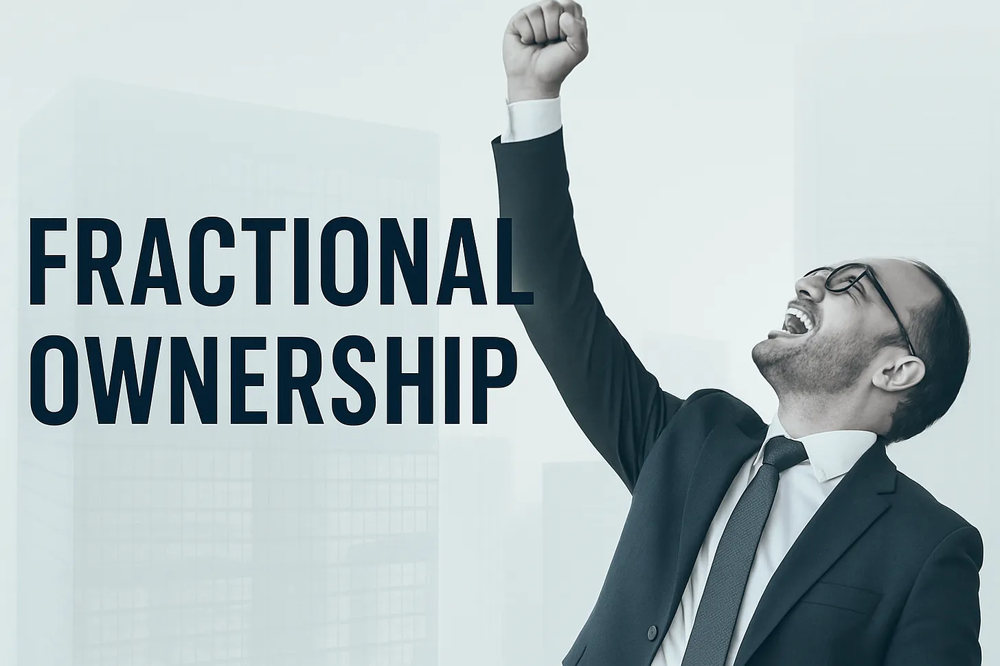

Why You Get Equity
November 3, 2025

At 15% alignment loss per hierarchy level at your workplace: misalignment reaches 62% at the leafs.
Every layer between you and the CEO costs something. If each level loses a certain percentage of alignment, the losses compound. These are called principal-agent costs.
With 6 levels (typical hierarchy):
- At 15% loss per level: 38% survives (62% misaligned)
- At 11% loss per level: 50% survives (50% misaligned)
- At 16.7% loss per level: 33% survives (67% misaligned)
With 3 levels (flat company):
- At 15% loss per level: 61% survives (39% misaligned)
- At 21% loss per level: 50% survives (50% misaligned)
Microsoft began granting stock options broadly in the early 1980s, before its 1986 IPO. Made thousands of employees millionaires through the 1990s. Google, Facebook, Amazon followed similar models. Every startup now offers equity.
The theory was elegant: make employees owners, they'll think like owners. The behavior patterns remained unchanged.
In 1976, two professors at the University of Rochester explained why.
The Principal-Agent Problem
William Meckling was the dean at Rochester's Simon School, twenty years removed from RAND Corporation where he'd studied nuclear warfare logistics. In 1967, he hired Michael Jensen, who'd recently completed his PhD at the University of Chicago. Jensen was 33, had published papers arguing markets were too efficient for anyone to beat them consistently.
An odd pair. Jensen intense and mathematical, Meckling philosophical and sardonic. Meckling had observed a pattern as dean: You'd give a professor tenure, thinking they'd now act like an owner of the institution. Instead, they'd immediately reduce their teaching load and disappear into irrelevant research. You'd make an executive a millionaire through stock options. They'd use company money to buy corporate jets.
1976 was a strange year to be thinking about ownership. Watergate had destroyed trust in institutions. New York City was bankrupt. Stagflation was teaching everyone that economics textbooks might be wrong about everything.
Companies with the most elaborate incentive plans often performed worse than companies with simple salary structures. Jensen had been tracking this in the data.
Meckling had a theory from his RAND days: humans optimize for survival in the immediate game, not the larger game everyone pretends they're playing.
They spent two years turning bar arguments into equations. What they wrote down: whenever someone acts on behalf of someone else, value leaks out.
Their paper--"Theory of the Firm: Managerial Behavior, Agency Costs and Ownership Structure"--would become one of the most cited in economics. Over 70,000 times by 2024. But the daily implications remained hidden in plain sight.
The Three Agency Costs
Jensen and Meckling identified where the value goes:
Monitoring costs. Principals spend resources watching agents. Time sheets. Progress reports. Status meetings. All trying to observe what agents actually do.
Bonding costs. Agents spend resources proving they're trustworthy. Audits. Certifications. Performance reviews. All signaling alignment they may not feel.
Residual loss. Even with monitoring and bonding, agents make different decisions than principals would. The gap between what an owner would do and what the manager does.
These three costs are irreducible. You can minimize them but never eliminate them. The very act of delegating creates the loss. Every attempt to "align incentives" creates new costs in different forms.
The Agency Cost Formula: If each principal-agent relationship loses x% of value over n levels: Remaining alignment = (1 - x)^n.
The Agency Cascade
Jensen and Meckling studied one relationship: owner to CEO. But modern organizations are cascades of principal-agent problems.
You're an agent to your manager. Your manager is an agent to their director. The director to the VP. The VP to the C-suite. The C-suite to the board. The board to the shareholders.
OKRs at the executive level transform by the time they reach individual contributors. Each level is playing a different game--optimizing for their manager above while managing the agents below. Your manager translates strategy through the lens of their own principal-agent position.
The Information Currency
"Let me check with my manager."
You ask about budget. Your manager knows--they discussed it Tuesday in leadership. They say those five words.
Jensen and Meckling's framework explains. Agents know operations. Principals know strategy. Value gets captured in the gap.
When your manager says "let me check," they're calculating optimal release timing. Tell you immediately? Zero leverage. Wait a week, package it with context, release when you're most receptive? That creates control.
Hours pass. Days sometimes. The information sits there, appreciating in strategic value.
From our collection of raw engineer and manager quotes, the pattern emerges:
- "I was forced to lie and manipulate about the state of the company to keep the team in place until an acquisition deal could close."
- "Projects I thought would be my responsibility were taken away from me and given to someone else for reasons I don't understand."
- "I thought I was doing OK, but then I found out in my review that I'd been doing these things wrong for months, and it seemed like everyone knew this but me."
Each quote captures the same dynamic. Information about acquisitions. Information about project reassignments. Information about performance. Held at one level, released at another, timed for maximum strategic value.
Someone captures the agency cost through information arbitrage at every level.
The Temporal Cascade
Time horizons multiply the problem.
You optimize for sprint velocity--two weeks. Your manager optimizes for quarterly OKRs. Their manager for annual reviews. VPs for their 3-year vesting schedule. C-suite for their 4-year full vest. Board members for CEO tenure cycles.
Each time horizon is a different optimization problem. Behavioral economists have shown you literally cannot optimize for multiple time horizons simultaneously--the brain treats them as separate games requiring different strategies.
Even with perfect equity alignment on paper, temporal misalignment makes coordination impossible. Everyone owns stock. Everyone optimizes for different clocks.
Netflix's Demonstration
Netflix was supposed to eliminate these problems. Their culture deck, viewed 20 million times: "No brilliant jerks." "Freedom and responsibility." "Context not control."
Around a few hundred engineers run the core product serving 250 million subscribers. Traditional media companies need 50x more people for less reach. Radical transparency. Minimal hierarchy.
Yet the Glassdoor reviews describe familiar patterns. Engineers work on visible features over invisible infrastructure. Information about reorganizations flows differently at management levels. The "Keeper Test" creates incentives where visibility matters for retention decisions.
Reed Hastings stepped down as CEO in 2023 but remained Executive Chairman and board member supervising the CEOs he selected, who immediately changed strategic direction. New principal-agent relationships emerged from the restructuring.
Netflix reorganized agency problems into different patterns.
Google's 180,000 Fractional Owners
Alphabet made more employees millionaires than any company except Microsoft. 180,000 employees. Median compensation: $280,000, mostly in stock. An engineer with $500,000 in equity owns 0.00001% of the company.
The theory predicted owners. Owning 0.00001% of something doesn't create ownership psychology. It creates lottery ticket psychology. You can't influence Google's strategy with your shares. You can influence your next performance review.
So you optimize for the game you can actually play.
Jensen and Meckling showed why in their equations: fractional ownership creates fractional alignment. But fractional alignment is just misalignment with equity compensation.
Stock options didn't solve principal-agent problems. They added new layers around vesting schedules, refresh grants, and exercise timing.
Coase Meets Jensen
Ronald Coase explained why firms exist--they reduce transaction costs compared to markets. Jensen and Meckling explained what happens inside firms--they create agency costs that didn't exist in markets.
Put them together: firms convert transaction costs into agency costs. Management is the conversion mechanism, extracting value at each level.
We traded market chaos for organizational hierarchy. The hierarchy extracts rent on that trade through information control at every boundary.
The Check That Isn't Checking
"Let me check with my manager."
Now you know what that means. You buffer your estimates. Your manager buffers their commitments. Everyone maintains their margin.
We all play the game theoretic construct. Two professors in Rochester quantified it in 1976.
References
- Jensen, M.C. & Meckling, W.H. (1976). "Theory of the Firm: Managerial Behavior, Agency Costs and Ownership Structure." Journal of Financial Economics, 3(4), 305-360.
- Ronald Coase (1937). "The Nature of the Firm." Economica, 4(16), 386-405.